Додавання графічних зображень у текстовий документ Word
Бувають випадки, коли користувачу необхідно додати в текст документа графічні зображення, які будуть вигідно підкреслювати його зміст та привертати до нього більшу увагу.
В якості графічних зображень, в програмі Word можуть бути використані зображення різноманітних форматів (jpg, png, bmp), що знаходяться на жорсткому диску комп’ютера, знімних носіях чи в Інтернеті.
Додатково в текст документа можна додавати ще і інші графічні об’єкти, наприклад такі як: фігури, піктограми, діаграми, графічні елементи SmartArt, 3D-моделі, тощо.
Вставка зображень.
Для вставлення в текстовий документ графічного зображення, яке зберігається на жорстокому диску комп’ютера або змінному носії треба:
- помістити вказівник у потрібне місце в документі де повинно з’явитися зображення;
- перейти до вкладки Insert (Вставлення) і у групі Illustrations (Ілюстрації) обрати інструмент Pictures (Зображення);
- в діалоговому вікні Inset Pictures (Вставлення рисунка) за допомоги файлового провідника знайти папку з потрібним файлом;
- виділити один файл або декілька файлів зображень і натиснути кнопку Insert (Вставлення).
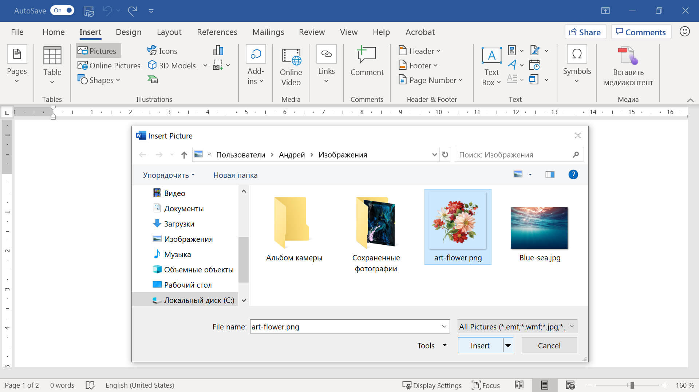
Вставка зображень з Інтернету.
Для вставлення в текстовий документ графічного зображення з Інтернету треба:
- помістити вказівник у потрібне місце в документі де повинно з’явитися зображення;
- перейти до вкладки Insert (Вставлення) і у групі Illustrations (Ілюстрації) обрати інструмент Online Pictures (Зображення з Інтернету);
- в діалоговому вікні Online Pictures (Зображення з Інтернету) обрати категорію за якою будуть показуватися знайдені і Інтернеті зображення, або власноруч скориставшись пошуковою системою Bing;
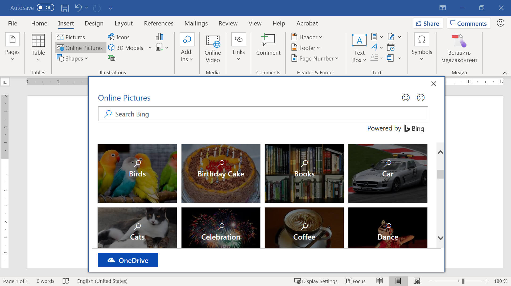
- у вікні «результатів пошуку» користувач може скористатися спеціальними фільтрами (Size (розмір), Type (тип), Layout (макет), Color (колір)), які допомагають більш точно налаштувати параметри видачі зображень;
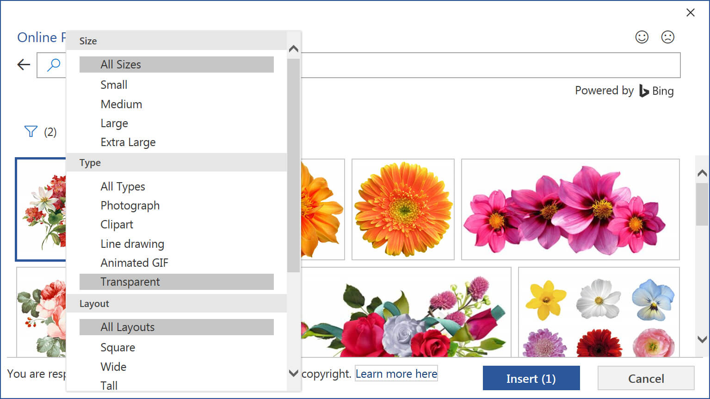
- виділити один файл або декілька файлів зображень і натиснути кнопку Insert (Вставлення);
- дочекатися закінчення процесу завантаження.
Опрацювання зображень у текстовому редакторі.
Уставлені в текстовий документ графічні зображення можна редагувати або форматувати. Але, перед тим як виконувати будь-які операції над ними, їх потрібно виділити, вибравши вказівником миші.
Навколо виділеного зображення з’явиться контур у вигляді тонкої рамки з маркерами зміни розміру, маркером обертання та іконкою інструмента Layout Options (Параметри макета), яка відображається біля його правого верхнього кута, а на стрічці команд з’являється додаткова вкладка Picture Format (Формат зображення).
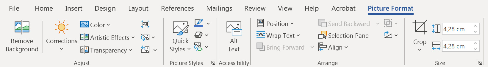
Зміна розмірів та кута нахилу зображення.
Наведення вказівника миші на один з цих маркерів призведе до зміни його вигляду на двосторонню стрілку ⤢ – показує напрямок зміни розмірів зображення. Використовуючи маркер ⟳ обертання можна повернути зображення на певний кут.
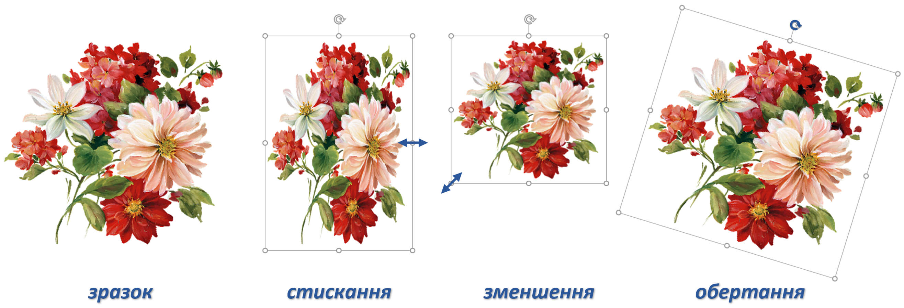
Однак, якщо треба задати точні розміри зображенню або повернути його на певний кут треба:
- виділити зображення;
- перейти на панелі інструментів до вкладки Picture Format (Формат зображення) і у групі Size (Розмір) визвати діалогове вікно групи;
- у діалоговому вікні Layout (Макет) на вкладці Size (Розмір) можна встановити наступні значення параметрів:
- Height (Висота) – висота зображення;
- Width (Ширина) – ширина зображення;
- Rotation (Повернути) – кут нахилу зображення;
- Scale (Масштаб) – масштаб зображення;
- Lock aspect ratio (Зберегти пропорції) – при зміні тільки висоти чи ширини, зображення буде автоматично змінювати свої розміри щодо встановленої пропорції;
- для застосування вказаних параметрів треба натиснути кнопку ОК.
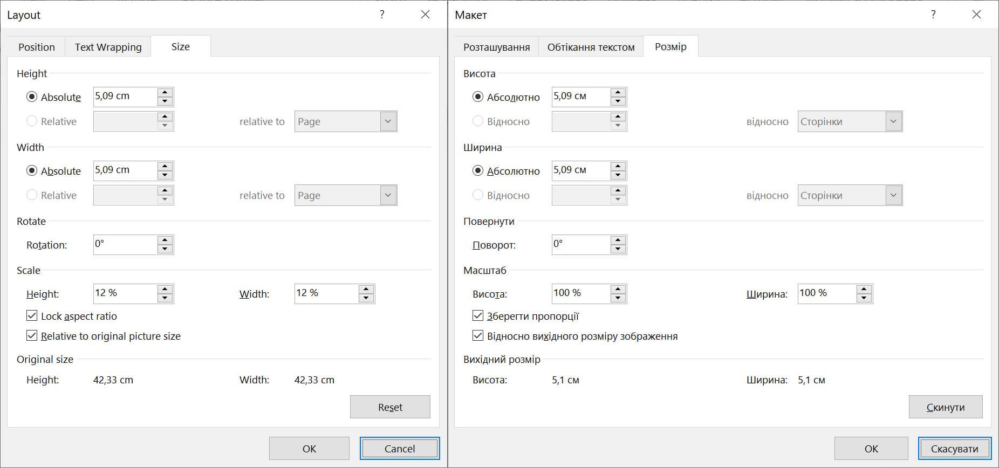
Зміна стилю зображення.
До зображень, що знаходиться в текстовому документі можна застосовувати деякі стилі та ефекти оформлення.
Зміна стилю зображення:
- виділити зображення;
- перейти на панелі інструментів до вкладки Picture Format (Формат зображення) і у групі Picture Styles (Стилі зображень) відкрити галерею стилів та обрати потрібний варіант.
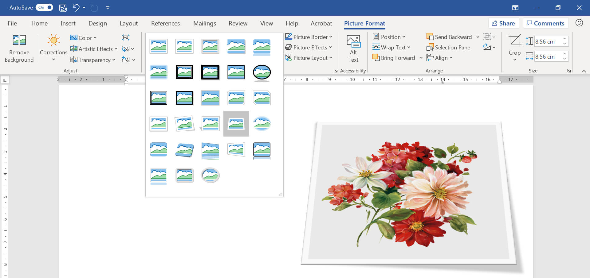
До застосування того чи іншого стилю, при наведенні на нього вказівника миші спрацьовує функція попереднього перегляду, і малюнок відображається в обраному стилі.
Але, користувач може і самостійно налаштувати стиль оформлення для зображення.
Алгоритм створення власного стилю для зображення:
- кліком правої кнопки миші визвати контексте меню зображення;
- серед пунктів меню обрати Format Picture (Формат зображення);
- в правій частині вікна програми Word з’явиться відповідне меню з чотирма розділами:
- Fill&Line (Заливка й контур) – в розділі користувач може налаштувати способи заливки зображення та вигляд його контуру.
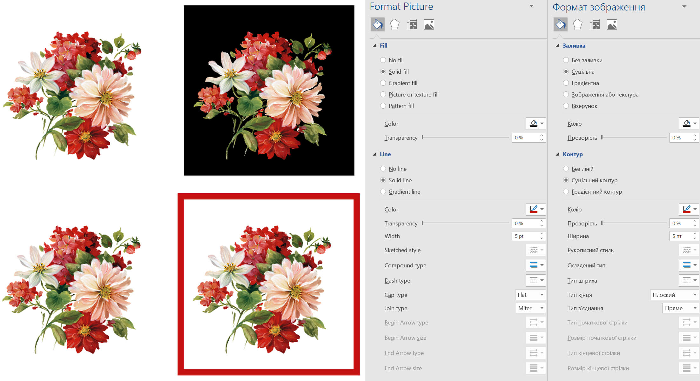
- Effects (Ефекти) – в цьому розділі користувачу доступні такі
налаштування як:
- Shadow (Тінь);
- Reflection (Відбиття);
- Glow (Світіння);
- Soft Edges (Розмиття країв);
- 3-D Format (Формат об’ємної фігури);
- 3-D Format (Об’ємне обертання);
- 3-D Format (Художні ефекти);
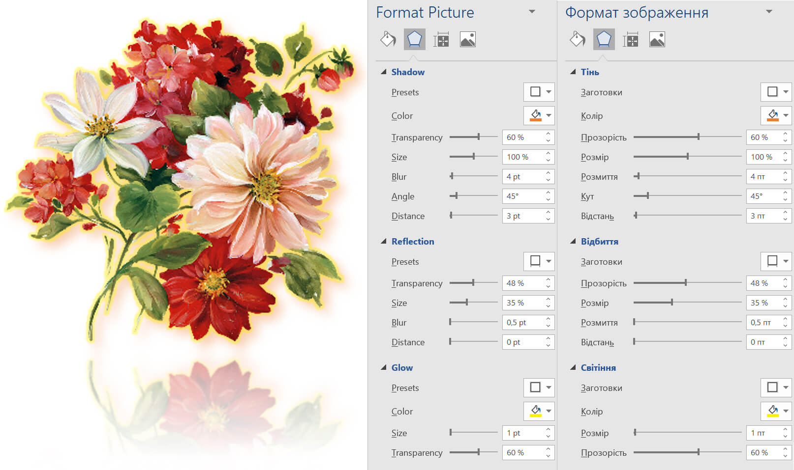
- Picture (Рисунок) – в цьому розділі користувачу доступні такі
налаштування як:
- Picture Corrections (Коригування зображення);
- Picture Color (Колір зображення);
- Picture Transparency (Прозорість зображення);
- Crop (Обтинання).
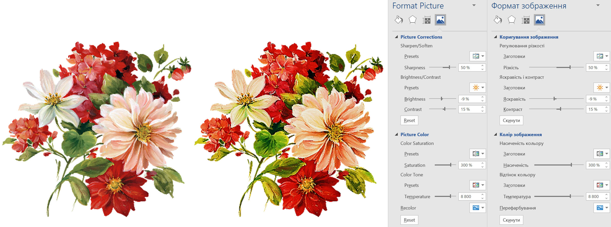
Отже, як бачимо, застосування комбінації параметрів налаштувань інструментів форматування до зображення може дати досить гарний результат, і якщо користувач ще не опанував такі досить відомі програми для роботи з графічними зображеннями, наприклад як: Adobe Photoshop, Adobe illustrator, CorelDraw і тому подібні, їх з деякою долею вірогідності може замінити саме Microsoft Office Word.
Видалення окремих частин з зображення.
Для видалення із зображення зовнішнього фону або окремих його елементів треба:
- виділити зображення;
- перейти на панелі інструментів до вкладки Picture Format (Формат зображення) і обрати інструмент Remove Background (Видалити фон);
- за допомоги маркерів зафарбувати необхідні області малюнку і програма сама автоматично видалить їх;
- Mark Areas to Remove (Позначити області для видалення) – видаляє зайві елементи із зображення;
- Mark Areas to Keep (Позначити області для збереження) – повертає елементи зображення;
- для застосування результату натисніть на напис Keep Changes (Зберегти зміни).
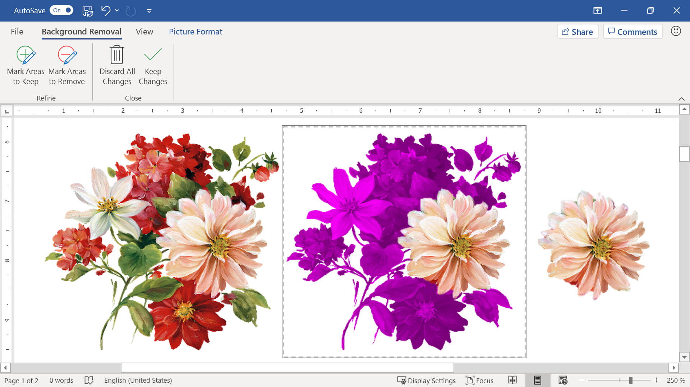
Налаштування положення зображення в тексті.
За замовчуванням, зображення що було додано у текстовий документ знаходиться в тексті і набуває всіх його ознак, тобто, до нього можна застосовувати ті ж самі стандартні інструменти форматування, наприклад: вирівнювати відносно ширини сторінки, задавати відступи, зробити окремим абзацом, тощо. Тому таке зображення неможна вільно переміщувати на сторінці в документі, а для того щоб змінити це налаштування треба зображенню задати обтікання.
Обтікання текстом – визначає спосіб взаємного розміщення тексту та зображення.
Змінити положення зображення в тексті можна декількома способами:
- виділити зображення;
- перейти на панелі інструментів до вкладки Picture Format (Формат зображення) і у групі Arrange (Упорядкувати) обрати інструмент Wrap Text (Обтікання текстом);
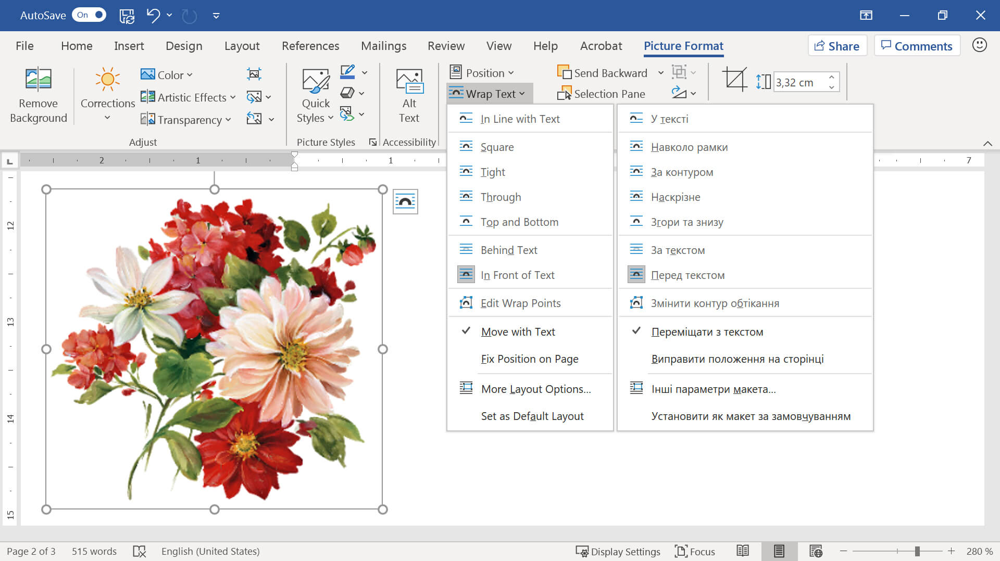
- серед запропонованих параметрів обтікання обрати потрібний;
- якщо необхідно додатково налаштувати ті чи інші параметри макету треба обрати із списку інструмент More Layout Options (Інші параметри макета);
- у вікні Layout (Макет) на вкладці Text
Wrapping (Обтікання текстом) встановити значення для наступних параметрів:
- Wrapping style (Обтікання);
- Wrap text (Обтікання текстом);
- Distance from text (Відстань від тексту);
- для застосування параметрів натиснути кнопку OK.
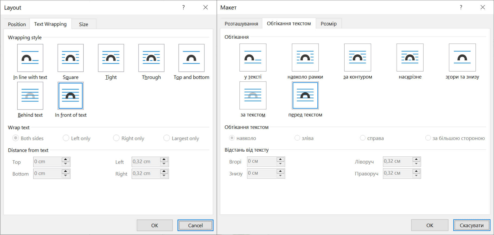
- виділити зображення;
- біля його правого лівого кута з’явиться іконка інструмента Layout Options (Параметри макета);
- у вікні інструменту серед запропонованих параметрів обтікання обрати потрібний.
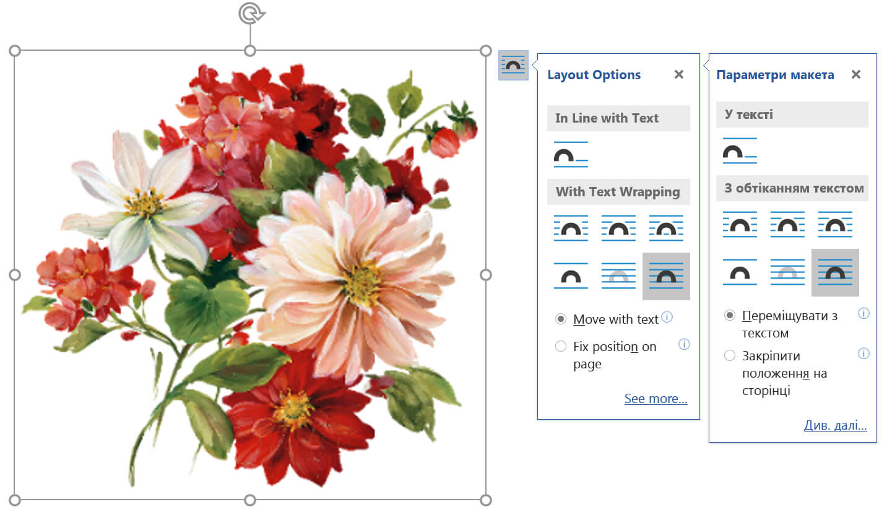
Упорядкування зображень в тексті.
В програмі Microsoft Word, крім усього іншого, дуже гарно реалізована можливість упорядковувати зображення відносно один одного.
Для упорядкування зображень треба:
- виділити зображення:
- виділити перше зображення;
- затиснути клавішу Ctrl;
- виділити інші зображення;
- перейти на панелі інструментів до вкладки Home (Основне) і у групі Editing (Редагування) обрати інструмент Select (Виділити);
- серед параметрів інструменту обрати параметр Select Objects (Вибрати об’єкти);
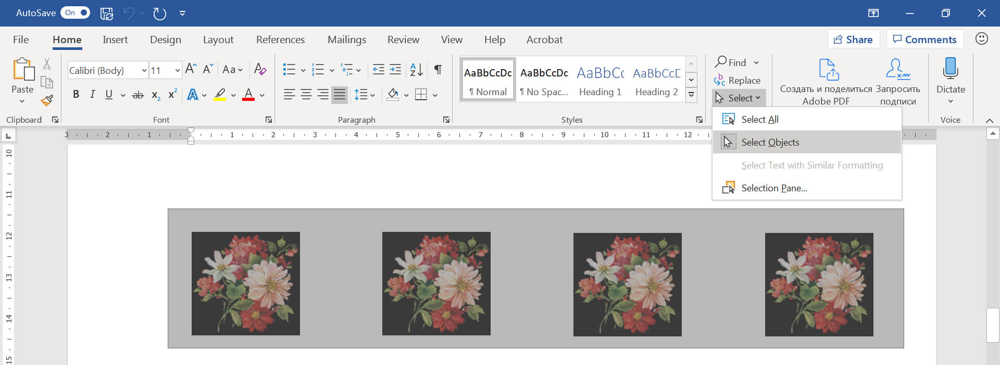
- перейти на панелі інструментів до вкладки Picture Format (Формат зображення) і у групі Arrange (Упорядкувати) обрати інструмент Align (Вирівняти);
- серед запропонованих параметрів вирівнювання обрати потрібний.
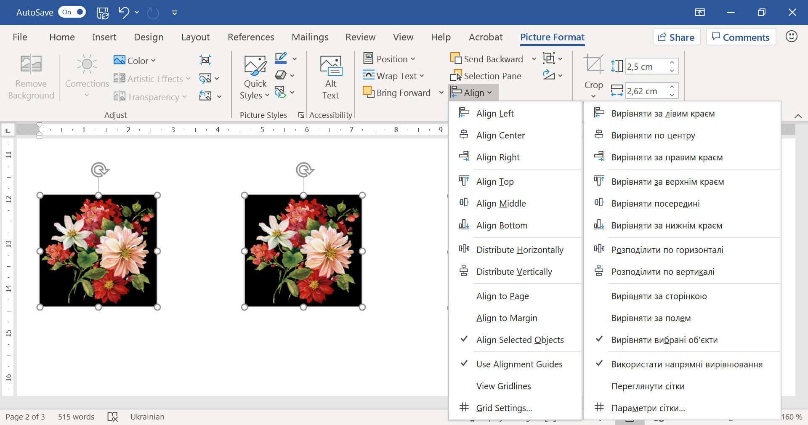
Застосування комбінації параметрів вирівнювання допоможе користувачу досить швидко упорядкувати декілька зображень відносно один одного.